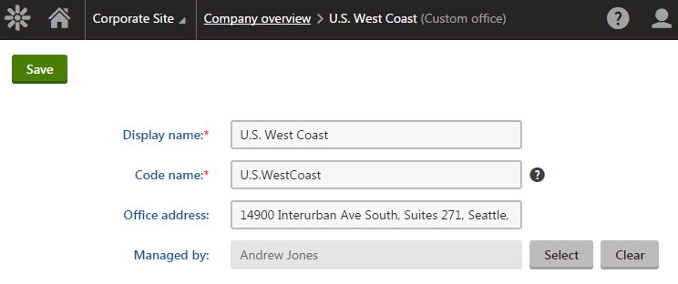
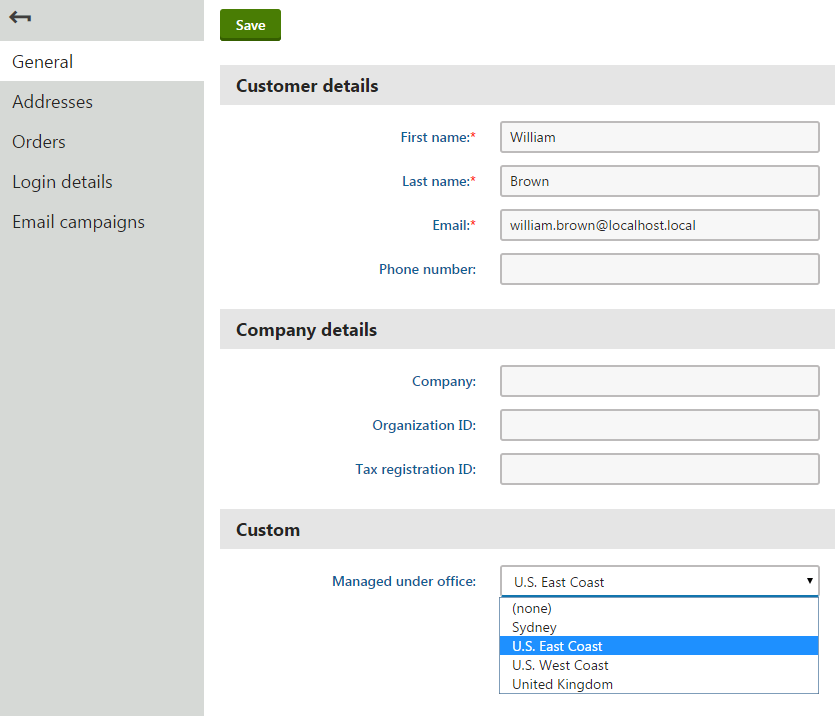

Adding references between classes
When developing classes for custom modules, you can create fields that store references pointing to objects of other classes (i.e. foreign key fields). Such references allow each object of the given class to have a relationship with an object of another class. For example, you can assign users, sites or any other object in the system to your custom objects.
To ensure that the system automatically handles dependencies for your references, you need to register the reference fields in the type information of classes. The system can then maintain referential integrity of relationships when importing or staging objects to other instances, or perform automatic removal of objects when a referenced object is deleted.
You can define references in two possible directions:
From your custom class to another class registered in the system (the target class can also be custom)
From any customizable class to your custom class (for example, from a customizable Kentico class)
When planning relationships between classes, carefully consider which approach to use:
Use reference fields (foreign keys) to define one-to-many relationships between standalone classes. See the remaining parts of this page to learn more.
If you need to manage many-to-many relationships between two or more classes, create separate binding classes.
Use parent-child relationships to define a hierarchy for classes.
Creating references to pages
We do NOT recommend creating references from custom classes to the page class (i.e. the cms.document object type). Pages in Kentico are complex data structures that consist of multiple classes and have special logic for handling other factors, such as workflow.
Custom references to pages do not support certain features, such as handling of referential integrity when the referenced page is deleted.
Adding references from custom to other classes
To create a reference from a custom class to an existing class in the system:
Open the Modules application.
Edit the custom module and class where you wish to add the reference.
On the Fields tab of the class editing interface, create a New field.
The best practice is to end the field name with the ID suffix.
Set the field's Data type to Integer number.
Select the target class of the reference in the Reference to selector.
Choose a Reference type to determine how the system handles referential integrity and automatic removal of objects when a referenced object is deleted. For more information about the available options, see the table describing the ObjectDependencyEnum values below.
Notes:
The Required flag in the field settings controls whether the reference field must have a target object set (not to be confused with the Required option of the Reference type setting).
You can either keep the field hidden in the class's editing forms and handle the values in code, or create an object selection interface (for example using the Uni selector form control).
Click Save. You can create any number of reference fields using the same approach.
Switch to the Code tab of the class editing interface to view the new code generated for the class. Consider how to update the code in the web project:
If you have already customized the class's Info or InfoProvider code, you can manually compare and copy the differences caused by the reference fields.
Click Save code to fully overwrite the Info and InfoProvider code of the class.
Important: The Reference settings that you configure for fields on the Fields tab only serve as input for the default code generated for the Info class. Changing the field settings after you generate your code does NOT change the behavior of the reference fields. To make changes, you need to adjust the code of the given Info class.
The type information definition in the generated Info code automatically includes the required object dependencies based on the Reference settings of your fields. If you view the code, you can see that the DependsOn property in the initializer of the TYPEINFO object contains a List collection of ObjectDependency objects.
// Defines references from a custom class to the User and Culture classesDependsOn = new List<ObjectDependency>{ new ObjectDependency("CustomClassUserID", UserInfo.OBJECT_TYPE, ObjectDependencyEnum.Required), new ObjectDependency("CustomClassCultureID", CultureInfo.OBJECT_TYPE, ObjectDependencyEnum.NotRequired)},Each ObjectDependency object defines one reference from the custom class to another class in the system. ObjectDependency objects have the following parameters:
column (string) - the name of the custom class field (column) that stores the IDs of the referenced objects.
object type (string) - the object type name of the class that is the target of the reference.
reference type (ObjectDependencyEnum) - determines how the system handles referential integrity and automatic removal of objects when a referenced object is deleted. The value must be one of the options from the ObjectDependencyEnum:
Value
Description
NotRequired
Represents an optional reference. If the referenced object is deleted or does not exist on the target instance during import or staging, the system sets a null value for the reference field.
The column that stores the IDs of the referenced objects must support empty/null values (i.e. the Required flag cannot be enabled for the field).
For example, a field storing the ID of an avatar object is a NotRequired dependency of the user class.
RequiredHasDefault
If the referenced object is deleted or does not exist on the target instance during import or staging, the system automatically assigns a default object.
For example, the blog comment class has a RequiredHasDefault type dependency for the field storing the ID of the user who approved the comment. The system does not delete blog comments if the user who approved the comment is removed. Instead, the default administrator account is assigned as the referenced user.
To set the default object for your own custom classes, you need to override the GetDefaultObject method in the code of the given Info class.
ExampleprotectedoverrideBaseInfo GetDefaultObject(){// Gets the object of the custom class whose code name is "default"CustomClassInfo defaultObject = CustomClassInfoProvider.GetCustomClassInfo("default");returndefaultObject;}Required
The system always maintains the integrity and consistency of the reference as long as a value is set (the value can still be null if the Required flag is disabled for the given field).
If the referenced object is deleted, the system automatically deletes the entire object containing the reference. If the referenced object does not exist on the target instance during import or staging, the operation is cancelled.
For example, a column storing the ID of the original web part is a Required dependency of the widget class. The widget cannot exist without the referenced web part.
Binding
Only intended for the reference fields of dedicated binding classes (classes that only exist as representations of relationships between other classes). Works the same way as the Required dependency type.
For example, the user-role binding class has a Binding type dependency for the field that stores the ID of the related user. The dependency of the role ID field is automatic, because the role class is set as the parent of the user-role binding class.
See also: Creating custom binding classes
Creating site references
If you are creating a class field that references a Kentico site, do NOT define any object dependencies in the type information. Simply enter the name of the class field that stores the site IDs into the siteIDColumn parameter of the ObjectTypeInfo constructor. The system automatically handles the required object dependencies based on the existence of the site ID field.
When adding the site ID field to your class on the Fields tab, do not configure any Reference settings. You only need to ensure that the field is set as the Site ID column before you generate the Info code on the Code tab (the selection is automatic if the field name ends with the SiteID suffix).
To allow global objects whose value in the site ID column is null, you need to set the SuppportsGlobalObjects property to true in the TYPEINFO definition of the given class.
// Sample type information definition for a basic class with a site reference field// The site reference is configured only by specifying "CustomClassSiteID" as the site ID fieldpublic static ObjectTypeInfo TYPEINFO = new ObjectTypeInfo(typeof(CustomClassInfoProvider), OBJECT_TYPE, "CustomModule.CustomClass", "CustomClassID", null, null, null, null, null, "CustomClassSiteID", null, null){ ModuleName = "CustomModule", SupportsGlobalObjects = true};The site relationship behaves as a Required type reference:
If the site referenced by an object is deleted, the system automatically removes the given object as well.
Objects that reference a site can only be exported as part of the given site. If the class supports global objects, then objects whose value in the site ID column is null can be exported as global objects or with sites.
Adding references from existing to custom classes
You can extend existing classes in the system by adding a reference field pointing to one of your custom classes.
Note: The extended class must be customizable . You cannot add the required reference field for classes that are not customizable.
Open the Modules application.
Edit the module and class that you wish to extend.
On the Fields tab of the class editing interface, create a New field.
The best practice is to end the field name with the ID suffix.
Set the field's Data type to Integer number.
Either keep the field hidden and handle the values in code, or create an object selection interface (typically through an alternative form).
There are no Reference settings to configure for the field with this type of reference.
Click Save.
You can repeat the process above for any number of customizable classes from which you wish to reference your custom class. Once the reference fields are created, you need to register them as dependencies in the type information of your custom class:
Open your Kentico solution in Visual Studio.
Edit the Info code of the custom class that is the target of the reference.
In the initializer of the TYPEINFO object, assign a List collection of ExtraColumn objects into the Extends property.
Create an ExtraColumn object for each custom reference field that targets the given class.
Save the changes (build the project on web application installations).
ExtraColumn objects accept the following parameters:
extended object type (string) - the object type name of the class where you added the reference field.
column (string) - the name of the custom field (column) in the extended class that stores the IDs of the referenced objects.
reference type (ObjectDependencyEnum) - determines how the system handles referential integrity and automatic removal of objects when a referenced object is deleted. The value must be one of the options from the ObjectDependencyEnum. See the table in the Adding references from custom to other classes section for details.
// Defines references from the Contact and User classes to a custom classExtends = new List<ExtraColumn>(){ new ExtraColumn(ContactInfo.OBJECT_TYPE, "ContactCustomClassID", ObjectDependencyEnum.Required), new ExtraColumn(UserInfo.OBJECT_TYPE, "UserCustomClassID", ObjectDependencyEnum.NotRequired)}The code informs the system that the specified field of the extended class stores references to another class. During the initialization of the application, the system automatically inserts an object dependency into the type information definition of the extended class.
Configuring foreign keys in the database
Kentico does not provide automatic management of foreign keys on the database level. You can manually set your custom ID columns as foreign keys in the corresponding database tables. This is not required to ensure correct functionality of reference fields in Kentico, but is recommended to leverage the performance and data consistency advantages of foreign key constraints.
You can either use SQL Server Management Studio or execute an SQL script. See Create Foreign Key Relationships for more information.
Example - Adding references between a custom class and other classes
The following example demonstrates how to add references for a custom class, in both possible directions:
From the custom office class to the Kentico user class (the relationship allows you to select a single user as the manager of each office)
From the Kentico customer class to the custom office class (allows you to specify one office that is responsible for managing a given customer)
To follow the example, you first need to create the Company overview custom module and the Office class according to the instructions in Creating custom modules.
Reference from the custom class to another class
Open the Modules application and edit the Company overview module.
Select the Classes tab and edit the Office class.
Open the Fields tab and create a New field in the office class:
Field type: Standard field
Field name: OfficeManagerID
Data type: Integer number
Reference to: User
Reference type: Not required
Field caption: Managed by
Form control: Uni selector (select via the (more items...) option)
Editing control settings -> Object type: cms.user (the object type name of user objects)
Editing control settings -> Selection mode: Single text box
Editing control settings -> Allow none: yes (selected)
Click Save.
Switch to the Code tab of the class editing interface.
Click Save code.
The system generates new Info and InfoProvider code and overwrites the existing code files (in the ~/App_Code/CMSModules/CompanyOverview folder by default). The type information definition in the Info code automatically includes the required object dependency based on the Reference settings of the OfficeManagerID field.
public static ObjectTypeInfo TYPEINFO = new ObjectTypeInfo(typeof(OfficeInfoProvider), OBJECT_TYPE, "CompanyOverview.Office", "OfficeID", "OfficeLastModified", "OfficeGUID", "OfficeName", "OfficeDisplayName", null, null, null, null){ ModuleName = "CompanyOverview", TouchCacheDependencies = true, // Defines the object dependency representing the optional reference to the user class DependsOn = new List<ObjectDependency>() { new ObjectDependency("OfficeManagerID", "cms.user", ObjectDependencyEnum.NotRequired), },};Office objects can now store a reference pointing to a single user object, representing the manager of the given office. You can try out the functionality by editing an office in the Company overview application (under the Custom category). The editing form automatically includes the new field, and the Uni selector form control allows selection of the user.

Editing an office object, with a selector in the editing form for managing the user reference
Reference from an existing class to a custom class
Start by creating the custom reference field in the Customer class (this class is customizable).
Open the Modules application.
Edit the E-commerce module, select the Classes tab, and edit the Customer class.
On the Fields tab, create a new field (at the end of the list of fields):
Field name: CustomerManagedByOfficeID
Data type: Integer number
Display field in the editing form: No (clear the checkbox)
Click Save.
Switch to the Alternative forms tab and edit the General properties alternative form.
Select the Fields tab, and set the following properties for the CustomerManagedByOfficeID field:
Display field in the editing form: Yes (select the checkbox)
Field caption: Managed under office
Form control: Uni selector
Editing control settings -> Object type: companyoverview.office (the object type name of the custom office class)
Editing control settings -> Selection mode: Single drop down list
Editing control settings -> Allow none: yes (selected)
Click Save.
Select the field above CustomerManagedByOfficeID, click ... next to the New field button and choose New category.
Enter Custom as the Category caption and click Save.
The Customer class now has a custom field that stores integer values. The modified General properties alternative form provides the interface used when editing existing customers on the General tab in the Customers application.
You do not need to configure any Reference settings while creating the CustomerManagedByOfficeID field on the Fields tab. When extending existing objects, you must define the object reference directly in the code.
Open your project in Visual Studio.
Edit OfficeInfo.cs (by default in the ~/App_Code/CMSModules/CompanyOverview folder).
Add a using statement for the CMS.Ecommerce namespace:
usingCMS.Ecommerce;Add the Extends property to the initializer of the TYPEINFO object. Designate the CustomerManagedByOfficeID field as a foreign key that references Office objects:
publicstaticObjectTypeInfo TYPEINFO =newObjectTypeInfo(typeof(OfficeInfoProvider), OBJECT_TYPE,"CompanyOverview.Office","OfficeID","OfficeLastModified","OfficeGUID","OfficeName","OfficeDisplayName",null,null,null,null){ModuleName ="CompanyOverview",TouchCacheDependencies =true,// Defines the object dependency representing the optional reference to the user classDependsOn =newList<ObjectDependency>(){newObjectDependency("OfficeManagerID","cms.user", ObjectDependencyEnum.NotRequired),},// Inserts an object dependency into the existing customer class// Defines the optional reference from the customer class to the custom office classExtends =newList<ExtraColumn>(){newExtraColumn(CustomerInfo.OBJECT_TYPE,"CustomerManagedByOfficeID", ObjectDependencyEnum.NotRequired)}};Save the change (build the project on web application installations).
The system now knows that the CustomerManagedByOfficeID field of the Customer class stores references to Office objects. The object dependency is dynamically inserted into the type information definition of the Customer class during the initialization of the application.
When editing existing customers on the General tab in the Customers application, you can now select and save an office object.

Editing a customer, with a custom office selector in the editing form